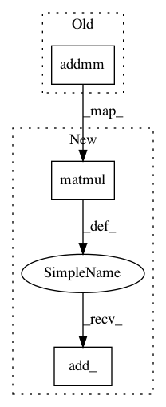

b09b7eef0a207b4b0bd35268862e20372c0ed069,qucumber/rbm/purification_rbm.py,PurificationRBM,prob_v_given_ha,#PurificationRBM#,231
Before Change
:rtype torch.Tensor:
return torch.addmm(
torch.addmm(self.visible_bias.data, h, self.weights_W.data, out=out),
a,
self.weights_U.data,
out=out,
After Change
:rtype torch.Tensor:
return (
torch.matmul(h, self.weights_W.data, out=out)
.add_(self.visible_bias.data)
.add_(torch.matmul(a, self.weights_U.data, out=out))
.sigmoid_()
In pattern: SUPERPATTERN
Frequency: 5
Non-data size: 3
Instances
Project Name: PIQuIL/QuCumber
Commit Name: b09b7eef0a207b4b0bd35268862e20372c0ed069
Time: 2019-12-22
Author: emerali@users.noreply.github.com
File Name: qucumber/rbm/purification_rbm.py
Class Name: PurificationRBM
Method Name: prob_v_given_ha
Project Name: PIQuIL/QuCumber
Commit Name: b09b7eef0a207b4b0bd35268862e20372c0ed069
Time: 2019-12-22
Author: emerali@users.noreply.github.com
File Name: qucumber/rbm/purification_rbm.py
Class Name: PurificationRBM
Method Name: prob_a_given_v
Project Name: PIQuIL/QuCumber
Commit Name: b09b7eef0a207b4b0bd35268862e20372c0ed069
Time: 2019-12-22
Author: emerali@users.noreply.github.com
File Name: qucumber/rbm/binary_rbm.py
Class Name: BinaryRBM
Method Name: prob_h_given_v
Project Name: PIQuIL/QuCumber
Commit Name: b09b7eef0a207b4b0bd35268862e20372c0ed069
Time: 2019-12-22
Author: emerali@users.noreply.github.com
File Name: qucumber/rbm/binary_rbm.py
Class Name: BinaryRBM
Method Name: prob_v_given_h
Project Name: PIQuIL/QuCumber
Commit Name: b09b7eef0a207b4b0bd35268862e20372c0ed069
Time: 2019-12-22
Author: emerali@users.noreply.github.com
File Name: qucumber/rbm/purification_rbm.py
Class Name: PurificationRBM
Method Name: prob_h_given_v